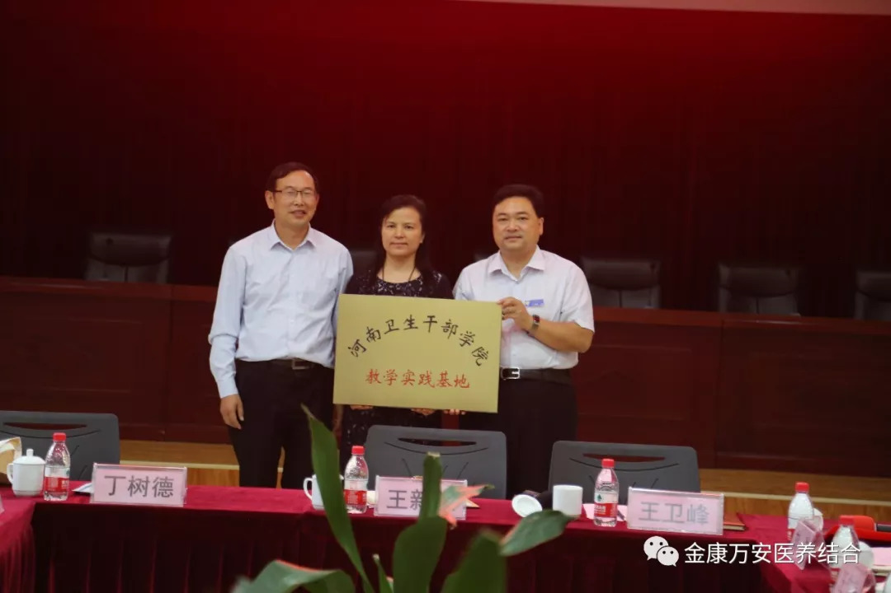

漯河万安康复医院、河南卫生干部学院 教学实践合作座谈
人气: "" 时间：2018-08-28
2018年8月28日，漯河万安康复医院、河南卫生干部学院教学实践合作座谈会及教学实践基地授牌仪式在漯河万安康复医院四楼会议室举行。河南卫生干部学院院长丁树德、副院长张原震、漯河市卫生和生育计划委员副主任王新慧、漯河万安康复医院、万安老年公寓院长王卫峰等一行领导参加此次座谈会。

座谈会开始之前，王卫峰院长等工作人员带领丁树德院长一行领导对我院整体环境及整体布局进行参观。

会上，王卫峰院长首先介绍了我院的基本情况，向百忙之中莅临我院参加“漯河万安康复医院?河南卫生干部学院教学实践合作座谈会”及授牌仪式的各级领导表示最热烈地欢迎和衷心地感谢！他表示，河南卫生干部学院拥有丰厚的教学资源，此次教学实践基地的授牌是我院与河南卫生干部学院开展合作交流踏出的第一步，并表示今后还希望在学术交流以及其他方面有更多合作的机会。
丁树德院长对王院长等人的热情接待表示感谢，并介绍了河南卫生干部学院情况，丁院长对两院合作表示祝贺，希望通过双方的“强强合作”实行资源共享，实现互惠互利。同时希望双方求真务实，创新发展，将医养结合与理论研究深度融合，多出合作成果。

漯河市卫生和生育计划委员副主任王新慧对金康万安与河南卫生干部学院达成合作事宜表示衷心 地祝福，同时也对河南卫生干部学院对我市卫生工作的支持表示真诚地感谢。王新慧主任说王卫峰同志是个勇于承担社会责任，用爱心、善心做事，是个能做成大事的同志，希望双方依托优势资源，深度合作，共同培养出一批批优秀人才。
在随后举行的授牌仪式上，丁树德院长向漯河万安康复医院授予“河南卫生干部学院教学实践基地”牌匾。
